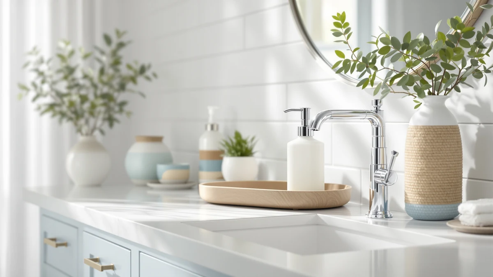

Best Soap Dispenser with Tray (2026)
Prices and picks verified as of September 2026. Independent, reader-supported reviews.


Quick Answer
The best soap dispenser with tray for most kitchens is the ORCHID HOME Luxury Kitchen Soap Dispenser Set, which pairs two amber glass bottles and stainless steel pumps with a diatomaceous earth tray that dries itself between wipe-downs. If you want a single bottle instead of a matched pair, the Brighter Barns Black Glass Hand Soap Dispenser covers a smaller sink for less. On a tight budget, the MASADI set still gets you a tray, two bottles and non-slip pads for under ten dollars.
Our pick: [Luxury] Kitchen Soap Dispenser Set — $24.99 Check Price on Amazon
Bottom line: our top pick is the [Luxury] Kitchen Soap Dispenser Set - 16OZ Amber Glass Bottle at $24.99. The best budget option is the MASADI Soap Dispenser Set with Bamboo Tray at $9.99.
Things to Know Before You Buy
- Tray material affects upkeep. Diatomaceous earth (ORCHID HOME) absorbs moisture and needs an occasional light sanding, while bamboo and wood trays (Brighter Barns, RYTOXILO, Kasunting, GMISUN) need to be dried promptly so the wood doesn't warp.
- Most sets ship with two bottles. Six of the seven picks here include two dispensers on one tray, usually split between hand soap and dish soap, so check the size field before assuming you're getting a single pump.
- Liquid soap only, in most cases. Brighter Barns states plainly that its bamboo-pump sets aren't compatible with foaming soap, and that limitation applies to most pump-style dispensers in this roundup.
- Price tracks with extras more than the tray itself. The $9.99 MASADI set and the $30.99 RYTOXILO set both include a tray, but RYTOXILO adds a decorative vase, waterproof labels and a heavier wood riser, which is where the price gap comes from.
- Non-slip pads matter as much as the tray. Several sets add silicone feet under the tray or the bottles themselves, which keeps the whole assembly from sliding when you reach for the pump one-handed.
The best soap dispenser with tray does two jobs at once: it dispenses soap cleanly and it catches every drip before that soap ever reaches your counter or vanity. The second part matters more than most buyers expect. A dispenser sitting directly on stone, wood or laminate leaves a ring of soap residue and standing water within weeks, and that ring is what eventually stains or warps the surface underneath it. A tray solves the problem by giving the bottle, and often a sponge or a second dispenser, a dedicated base you can wipe down without touching your counter directly.
We looked at seven sets built around this idea, ranging from a $9.99 glass-and-tray combo from MASADI to a $30.99 wood riser set from RYTOXILO. For most kitchens, the ORCHID HOME Luxury Kitchen Soap Dispenser Set is the strongest overall pick. It pairs two amber glass bottles and stainless steel pump heads with a diatomaceous earth tray, a material that pulls in moisture instead of leaving it sitting on the surface, so the base under your dispensers stays dry between wipe-downs.
Not every household needs the same setup. If you only want a single pump instead of a matching pair, the Brighter Barns Black Glass Hand Soap Dispenser skips the second bottle and the price that comes with it. If your budget tops out under ten dollars, the MASADI set still gets you a tray, two bottles and non-slip pads. We break down all seven below, including honest drawbacks for each, so you can match tray material and bottle count to your own sink.
Why You Should Trust Us
I'm Ilane Tall, and I research bathroom and kitchen products for Best Soap Dispensers. I don't run a fake testing lab, and I don't claim to have installed every dispenser on this list in my own home. What I do is compare the specs, materials and verified buyer feedback that Amazon and the manufacturers publish, then cross-check them against each other so the differences that matter, tray material, bottle count, pump type, are easy to see at a glance.
We earn a commission when you buy through the Amazon links on this page, and that commission never decides which product gets our top pick. If a set's tray warps easily or its pump only works with liquid soap, we say so, because a guide that hides drawbacks to protect a sale isn't worth reading.
How We Picked
We started by pulling every soap dispenser set in our database tagged as coming with a tray, then narrowed the list to sets currently sold in the United States with a clear price and a real product listing behind them, not a generic stock photo with no manufacturer information. From there we prioritized sets where the tray is a real part of the design, catching drips or corralling multiple bottles, rather than a thin plastic afterthought.
We also made sure the price range covered more than one budget tier. Seven dispenser sets made the cut, spanning $9.99 to $30.99, with tray materials that include diatomaceous earth, bamboo and coated wood, so you can match the option to how much daily cleanup you're willing to do.
How We Compared
For each set, we compared the manufacturer's stated capacity, bottle count, tray material and pump construction side by side, since those specs predict how a dispenser holds up at a busy sink. We treated plastic pump heads and stainless steel pump heads as different tiers, since stainless resists the corrosion that plastic pumps tend to show after months of contact with soap and water.
We also read through verified owner reviews where they existed, looking for repeated complaints, a pump that jams, a tray that stains, a bottle too narrow to refill without a funnel, rather than one-off comments. Prices reflect Amazon listings at the time of writing and can shift, so treat them as a guide rather than a guarantee.
Our Picks
![[Luxury] Kitchen Soap Dispenser Set](images/amazon-41j-mQdrJCL.jpg?v=2)
[Luxury] Kitchen Soap Dispenser Set
What we like
- Diatomaceous earth tray pulls in drips instead of pooling them
- Two 16 oz amber glass bottles cover hand soap and dish soap
- Stainless steel pump heads resist the corrosion plastic pumps show over time
Flaws but not dealbreakers
- Diatomaceous earth needs an occasional light sanding to keep absorbing well
- Two full bottles plus a stone tray add real weight for a small shelf
| Material | ABS plastic |
| Size | 16OZ |
The ORCHID HOME set pairs two 16-ounce amber glass bottles with black stainless steel pump heads, then sets both on a diatomaceous earth tray built to pull in moisture rather than let it sit on the surface. That detail separates it from most tray sets at this price, where the tray is a flat dish you still have to dry by hand. Two black silicone anti-slip pads keep the bottles from sliding on the tray itself, and a small dish brush with its own holder rounds out the set for anyone who wants a matching sponge station next to the sink.
At $24.99 for the full set, it lands in the middle of our price range, but you're getting a distinct tray material rather than the bamboo or wood most competitors use. Owners of diatomaceous earth trays report that the material keeps working for years as long as it gets an occasional light sanding to reopen the pores once it stops drying as quickly. That small bit of upkeep is the tradeoff for a tray that otherwise looks dry within minutes of a splash, which is why this is our pick for most people shopping for a best soap dispenser with tray combo that doesn't demand constant attention.

Black Glass Soap and Lotion
What we like
- Two 16 oz glass bottles with rustproof, BPA-free bamboo pumps
- Handmade bamboo tray doubles as a spot for a sponge
- Designed and assembled in the USA
Flaws but not dealbreakers
- Liquid soap only, not compatible with foaming soap
- $29.97 is the second-highest price in this roundup
| Material | Bamboo |
| Size | 16 oz |
Brighter Barns builds this set around two 16-ounce black glass bottles topped with bamboo pumps instead of the plastic or metal you'll find on most competitors. The bamboo pump housing is BPA-free and rustproof, which sidesteps the slow corrosion plastic pump springs eventually show after regular contact with soap. Both bottles sit on a handmade bamboo tray, and the company designs and finishes the whole set in the United States rather than importing a generic stock mold.
The tradeoff for the bamboo pump and tray combination is that this set is built for liquid soap only, so it won't work if you prefer foaming hand soap at your sink. At $29.97 it's also the second most expensive set here, behind only the RYTOXILO wood riser set. Reviewers of bamboo-topped dispensers note that the wood needs to be wiped dry after use so it doesn't develop water spots, the same basic care a wood cutting board needs. If you want black glass and matching wood in one purchase, that upkeep is a small price for the look.

Black Glass Hand Soap Dispenser
What we like
- Single 16 oz bottle keeps the price under $18
- Same bamboo pump and bamboo tray construction as the two-bottle version
- Bamboo pump resists the rust plastic pump springs develop over time
Flaws but not dealbreakers
- Only one bottle, so you'll need a second purchase for dish soap
- Liquid soap only, same as the rest of the Brighter Barns line
| Material | ABS plastic |
| Size | 16 oz |
This is the single-bottle version of the Brighter Barns set above, built with the same 16-ounce black glass bottle, BPA-free bamboo pump and handmade bamboo tray, minus the second dispenser. Dropping to one bottle brings the price down to $17.99, which makes sense if you only need hand soap at a bathroom sink and don't want to pay for a second pump you won't use.
Because the bottle and pump match the two-bottle set exactly, the same notes apply: liquid soap only, and the bamboo tray needs a quick wipe after splashes so it doesn't develop water spots. Owners who bought the single version for a powder room or guest bathroom report that its smaller footprint fits a narrower counter better than the two-bottle set does, since only one bottle's width has to sit on the tray.

MASADI Soap Dispenser Set with
What we like
- Cheapest set in this roundup at $9.99
- Includes a tray, two glass bottles and four non-slip silicone foot pads
- Wood hang tags let you label each bottle without buying separate labels
Flaws but not dealbreakers
- Plastic pump heads instead of the stainless steel or bamboo on pricier sets
- No listed dimensions, so measure your counter space before ordering
| Material | Bamboo |
| Size | — |
MASADI undercuts every other set here by roughly half, at $9.99 for a tray, two glass bottles, two plastic pump heads, two wood hang tags and four non-slip silicone foot pads. That's a full tray setup for less than the price of a single premium dispenser elsewhere in this roundup, and it still covers the core idea of keeping both bottles off your bare counter.
The obvious cut corner is the pump itself. Plastic pump heads are standard at this price, and they're the part most likely to feel loose or squeak after months of daily use, unlike the stainless steel and bamboo pumps on the pricier sets above. Buyers shopping specifically for a best soap dispenser with tray option under ten dollars tend to accept that tradeoff, since the tray, bottles and non-slip pads still cover the basics. If the pump wears out, this set costs little enough that replacing the whole unit isn't a major loss.

Modern Kitchen Soap Dispenser Set
What we like
- Wood riser tray has a water- and stain-resistant coating
- Includes a decorative amber vase with an artificial plant beyond the two bottles
- Four waterproof labels for marking hand soap, dish soap or lotion
Flaws but not dealbreakers
- At $30.99, it's the most expensive set in this roundup
- The vase and plant add clutter if you want a simple pump-and-tray setup
| Material | ABS plastic |
| Size | — |
RYTOXILO builds its set around a wood riser tray with a waterproof coating, meant to keep spills and condensation from soaking into the wood the way an uncoated tray eventually allows. Two amber glass bottles with matte black pumps sit on the tray alongside a small amber vase with an artificial plant, so the set works as a decorative arrangement as much as a utility station. Four waterproof labels come with it for marking hand soap, dish soap or whatever else you refill the bottles with.
At $30.99, this is the priciest set in our roundup, and the extra cost buys the coated wood riser and the decorative vase rather than a functional upgrade to the pump itself. If your counter space is tight, the vase is the first thing to skip, since the tray and two bottles work fine without it. Reviewers of wood riser trays like this one recommend wiping up standing water quickly even with a coated finish, since a coating slows water damage rather than eliminating it.

GMISUN Amber Glass Soap Dispenser
What we like
- Bamboo tray is shaped specifically to keep bottles from sliding or tipping
- Amber glass blocks light, which helps protect soaps and oils inside from breaking down
- 17 fl oz capacity per bottle, slightly more than the 16 oz standard elsewhere here
Flaws but not dealbreakers
- Round bottle shape takes up more tray space than a slimmer rectangular bottle
- Bamboo tray needs the same quick-dry habit as the other wood trays here
| Material | Bamboo |
| Size | 2 Pack + Tray |
GMISUN's set uses two round, 17-fluid-ounce amber glass bottles, each measuring roughly 8.5 by 3 by 3 inches, set into a bamboo tray designed to keep the bottles from sliding or tipping when you reach for the pump. That stability focus stands out here: rather than a flat tray that only catches drips, the base itself is shaped to hold the bottles in place, which matters most on a small counter you keep reaching across.
At $17.99, this set matches the single-bottle Brighter Barns dispenser on price while giving you two bottles instead of one. The amber glass tint isn't only cosmetic either; darker glass commonly slows light exposure to the liquid inside, which can help soaps and lotions with natural oils hold up longer between refills. Like the other wood and bamboo trays in this roundup, it needs a reasonably quick wipe-down after a spill so the bamboo doesn't stay damp.

Kitchen Soap Dispenser Set with
What we like
- Wood riser tray keeps countertops dry and organizes the set
- Six waterproof labels, more than any other set in this roundup
- Two non-slip silicone pads help hold the dispensers in place
Flaws but not dealbreakers
- The included decorative vase with artificial flowers isn't for everyone
- At $25.99, it costs more than similarly equipped sets like MASADI or GMISUN
| Material | ABS plastic |
| Size | — |
Kasunting pairs two amber glass dispensers with matte black stainless steel pumps and sets them on a wood riser tray, alongside a small amber vase with artificial flowers. Six waterproof labels come with the set, more than any other option in this roundup, so you can mark hand soap, dish soap, lotion, body wash, conditioner and shampoo without hunting down separate labels.
Two non-slip silicone pads sit under the dispensers to keep them from shifting on the tray, a detail that matters more than it sounds once you're reaching for the pump with wet or soapy hands. At $25.99, it costs a few dollars more than sets like MASADI or GMISUN that skip the decorative vase and extra labels. If you don't need six labels or a vase of artificial flowers, that price gap is worth weighing against a simpler set.
Quick Comparison
| Product | Material | Price | Rating | Best for | Get it |
|---|---|---|---|---|---|
| [Luxury] Kitchen Soap Dispenser Set | ABS plastic | $24.99 | 4 | Most people, low-maintenance tray | View on Amazon → |
| Black Glass Soap and Lotion | Bamboo | $29.97 | 4 | Matching black glass, two bottles | View on Amazon → |
| Black Glass Hand Soap Dispenser | ABS plastic | $17.99 | 4 | Single bottle, smaller counters | View on Amazon → |
| MASADI Soap Dispenser Set with | Bamboo | $9.99 | 4 | Lowest price, tray included | View on Amazon → |
| Modern Kitchen Soap Dispenser Set | ABS plastic | $30.99 | 4 | Decorative, most expensive | View on Amazon → |
| GMISUN Amber Glass Soap Dispenser | Bamboo | $17.99 | 4 | Best for stability, tip-resistant | View on Amazon → |
| Kitchen Soap Dispenser Set with | ABS plastic | $25.99 | 4 | Most labels, wood riser tray | View on Amazon → |
Do soap dispenser sets with a tray actually protect my counter?
Yes, within reason.
Can I put foaming soap in these dispensers?
Check the pump before you buy.
The Competition
Sunrise Premium 16 oz Amber Glass 2-Pack ($9.99): Similar bottles and price to our budget pick, but it ships as a bare two-pack with labels and no tray at all, so it doesn't fit a guide built around tray sets.
ONECOCOA Modern Plastic Pump ($8.99): A single standalone black pump with no tray or second bottle. It's a reasonable dispenser on its own, but it isn't built for this category.
Haocoott Faux Travertine 2-Pack ($19.53): The faux stone finish suits a travertine countertop, but the listing doesn't include a tray, so pairing it with one means a separate purchase.
NEECZS Kitchen Soap Dispenser Set with Instant Dry Tray ($24.99): This one does include a tray, plus a similar stainless steel pump and price to our top pick. We set it aside because it duplicates the ORCHID HOME set almost feature for feature, and a roundup gains more from covering distinct tray materials than from listing two near-identical sets.
Weighing tray material, bottle count and price across all seven sets, the ORCHID HOME Luxury Kitchen Soap Dispenser Set is still our overall pick for the best soap dispenser with tray, thanks to a diatomaceous earth base that dries itself and stainless pumps built to outlast plastic. If your budget or bottle count needs differ, the Brighter Barns single-bottle dispenser and the MASADI budget set both cover a tray-included setup at a lower price.
Frequently Asked Questions
Do soap dispenser sets with a tray actually protect my counter?
Yes, within reason. A tray catches the drips and condensation that would otherwise sit directly on stone, wood or laminate, which is what causes water rings and soap film over time. Materials vary in how well they handle that job: a diatomaceous earth tray like the one on the ORCHID HOME set actively pulls moisture in, while bamboo and wood trays need a quick wipe-down after a spill so the wood itself doesn't stay damp and warp.
Can I put foaming soap in these dispensers?
Check the pump before you buy. Brighter Barns states directly that its bamboo-pump bottles are built for liquid soap only and are not compatible with foaming soap, and that limitation applies to most standard pump-style dispensers in this roundup. If you want foaming soap specifically, look for a dispenser marketed as a foam pump instead of assuming a liquid pump will aerate the soap for you.
What's the difference between a bamboo tray and a diatomaceous earth tray?
Bamboo and wood trays, used on the Brighter Barns, RYTOXILO, Kasunting and GMISUN sets, are solid surfaces you dry by hand after a splash. A diatomaceous earth tray, like the one on our top pick from ORCHID HOME, is a porous stone material that pulls moisture into itself and dries on its own within minutes, though it eventually needs a light sanding to keep absorbing at the same rate.